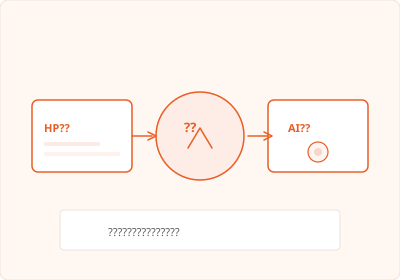

AXIS 01
HP制作
見た目だけで終わらない。目的・導線・信頼感まで設計した、事業の顔をつくる。
人を増やす前に、仕組みを整える。LOCAL GROWTHは、長崎を拠点にHP制作とAI支援の2軸から、企業の成長を静かに、強く後押しします。
ただ作るだけでも、ただ導入するだけでもない。
事業にとって本当に意味のある仕組みとして機能することを、私たちは大切にしています。
小さく始めて、使いながら育てる——外注ではなく、成長のパートナーとして並走します。

AXIS 01
見た目だけで終わらない。目的・導線・信頼感まで設計した、事業の顔をつくる。
AXIS 02
ツール紹介で終わらない。現場で使える形まで落とし込み、定着まで伴走する。
デザイン性だけでなく、目的・導線・信頼感まで設計します。
ツール紹介で終わらず、現場で使える形まで落とし込みます。
最初から大きく作りすぎず、実際に使いながら改善していくスタイルです。
単なる制作会社ではなく、事業の成長まで見据えた支援を行います。
WEB
AI
COMMON
PARTNER
外注ではなく、伴走してくれる相手を探している
フォームまたはメールで、お気軽にご連絡ください。
→ まずは現状整理現状や課題、ご希望を丁寧にお伺いします。
→ 課題の棚卸し課題に合わせた最適なプランをご提案します。
→ 最適な進め方を提示合意のうえ、制作またはAI導入支援をスタートします。
→ 実行フェーズへ導入後も継続的にサポートし、成果を育てていきます。
→ 定着と成果の積み上げカリスマ経営者
人を動かし、組織を前に進める推進力。
ビジョンを言語化し、チームと顧客の両方に火をつける存在。
長崎から、本気で企業の成長を牽引する。
AI × プロダクトの
スペシャリスト
最新のAI技術を、現場で回るプロダクトと仕組みに落とし込む。
HP制作からAIエージェント設計まで、
技術の顔としてLOCAL GROWTHを牽引。
「使えるAI」を、長崎の企業に届けたい。
営業のスペシャリスト
営業のプロとして成果を出し続け、
経営視点で事業成長を設計。
現場の声を経営に届け、売上と組織づくりの両輪を回す。
営業力で、長崎の企業の成長を加速する。
〒850-0824 長崎県長崎市三景台町1−27